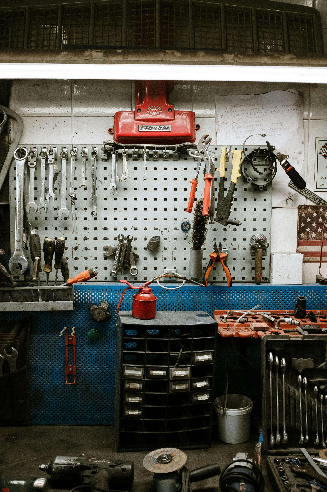

Wheel Alignment Services in Addis Ababa

Precision, Performance, and Peace of Mind: Your One-Stop Automotive Solution
Wheel alignment is the process of adjusting your vehicle's wheels to ensure they are properly aligned with the road. This precise adjustment helps your vehicle handle smoothly, maintain tire life, and improve fuel efficiency.
Why is Wheel Alignment Necessary?
Enhanced Handling and Control
Proper wheel alignment ensures that your vehicle responds accurately to steering inputs, providing you with greater control, especially in challenging driving conditions such as wet roads, snow, or winding roads. This improved handling can significantly enhance your overall driving experience and safety.
Enhanced Fuel Efficiency:
Misaligned wheels can increase tire rolling resistance, leading to decreased fuel economy.
Extended Tire Life
Wheel alignment helps distribute tire wear evenly across the tread, maximizing tire lifespan. This means fewer tire replacements and significant cost savings over time.
Reduced Vehicle Stress:
Misaligned wheels can put unnecessary stress on your vehicle's steering and suspension components, leading to premature wear and tear. This can result in costly repairs and maintenance down the line. By ensuring proper alignment, you can help protect your vehicle's overall health and longevity.
Wheel Alignment
Check Our Features
What is Wheel Alignment?
Wheel alignment refers to the adjustment of a vehicle's suspension system, ensuring that the wheels are set to the correct angles.
Proper wheel alignment is crucial for the optimal performance of your vehicle. It involves adjusting the angles of the wheels so that they are parallel to each other and perpendicular to the ground. This process helps in reducing tire wear, improving fuel efficiency, and ensuring a smooth driving experience.
Importance of Wheel Alignment
Maintaining proper wheel alignment is essential for vehicle safety and performance.
When your wheels are misaligned, it can lead to uneven tire wear, which may require premature tire replacement. Additionally, misalignment can affect your vehicle's handling, making it harder to steer and increasing the risk of accidents. Regular wheel alignment checks can enhance your vehicle's stability, improve fuel efficiency, and extend the lifespan of your tires.
Signs You Need a Wheel Alignment
Be aware of the warning signs that indicate your vehicle may need a wheel alignment.
Common signs include your vehicle pulling to one side while driving, uneven tire wear, a crooked steering wheel when driving straight, and vibrations in the steering wheel. If you notice any of these symptoms, it’s advisable to have your alignment checked by a professional to prevent further issues.
When to Get a Wheel Alignment
Regular maintenance is key to ensuring your vehicle's alignment is in check.
It is recommended to have your wheel alignment checked at least once a year or every 12,000 miles. Additionally, you should consider getting an alignment after any significant impact, such as hitting a pothole or curb, or after replacing tires. Keeping your alignment in check can save you money in the long run by preventing tire wear and improving fuel efficiency.
The Wheel Alignment Process
Understanding the wheel alignment process can help you appreciate its importance.
The wheel alignment process typically involves adjusting the camber, caster, and toe angles of the wheels. A technician will use specialized equipment to measure these angles and make precise adjustments. The process usually takes about an hour and can significantly improve your vehicle's handling and tire longevity. Regular alignments are a small investment for the safety and efficiency of your vehicle.